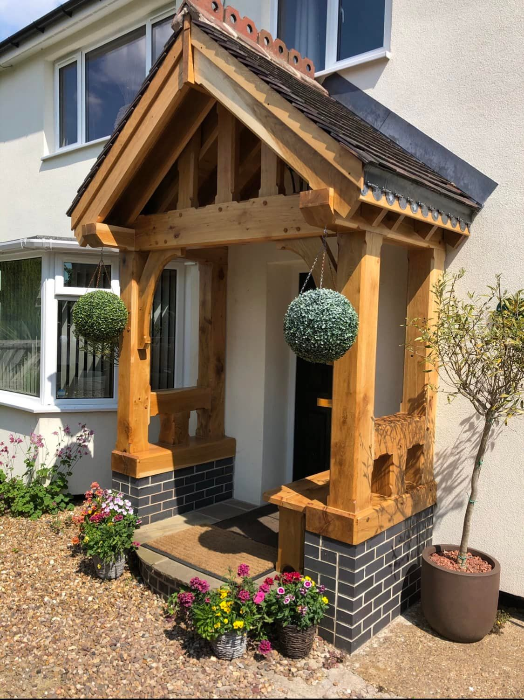
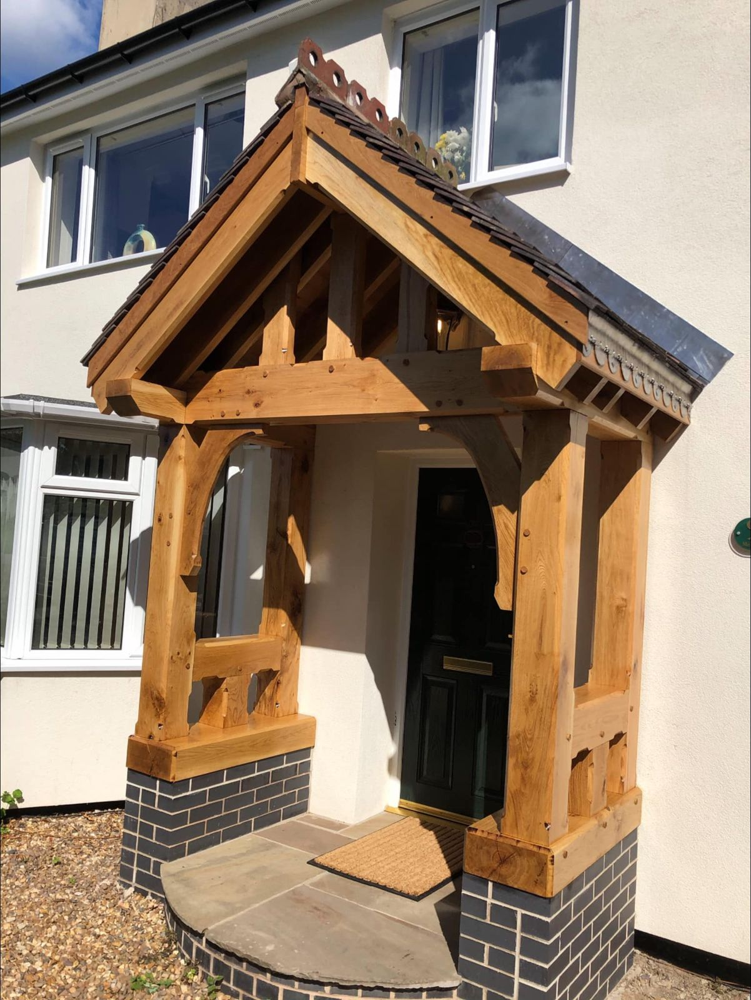
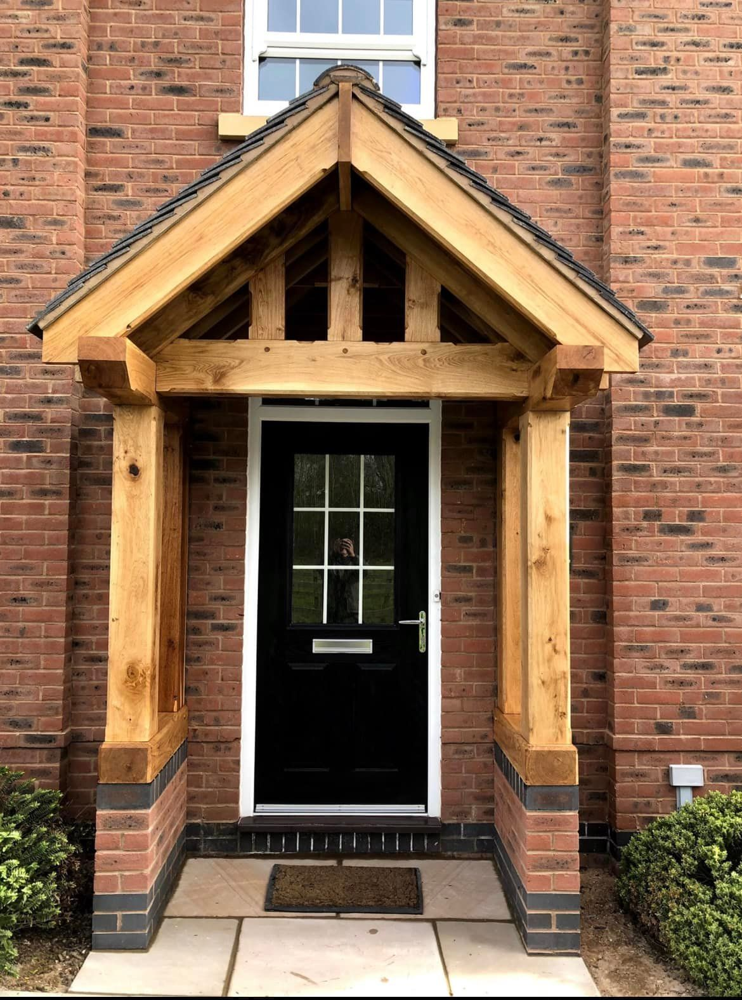
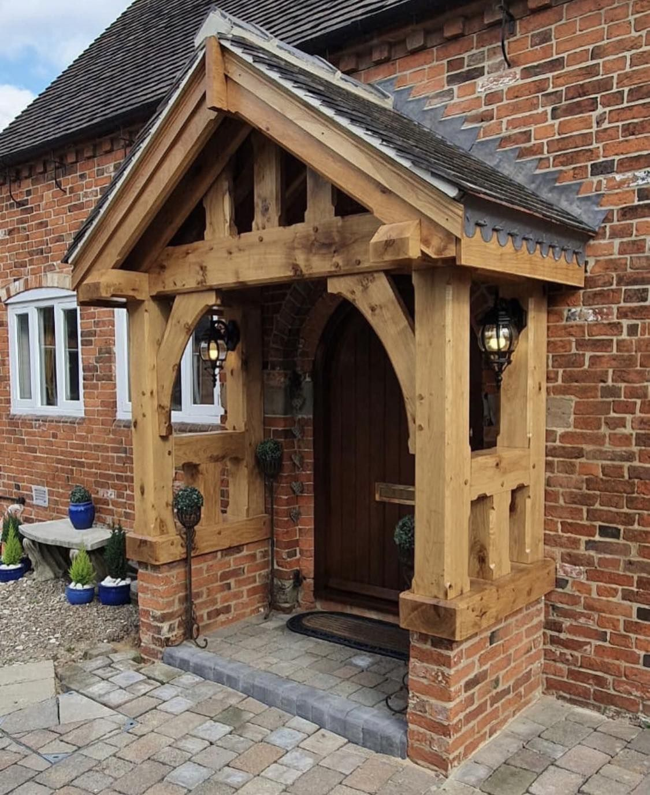
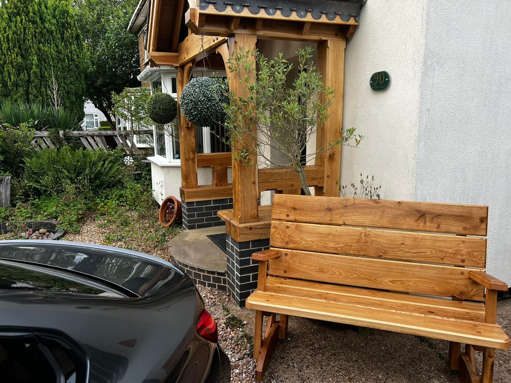
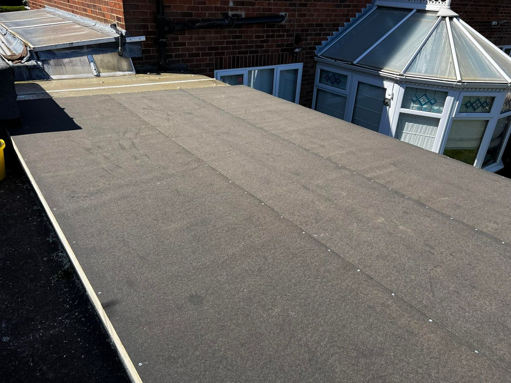
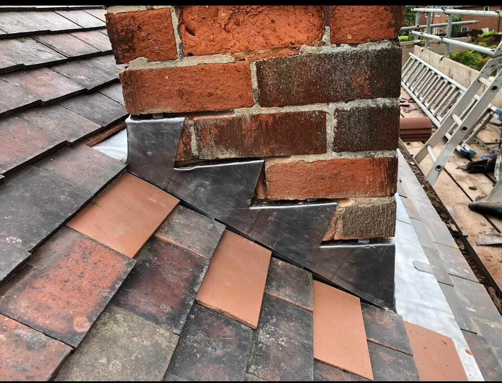

Bilborough, Nottingham
Beautiful oak porches, built by hand.
Individually hand-crafted green oak porches made using traditional methods of construction and fitting. Free estimates across Nottingham.
About us
Hand-crafted, the traditional way
We have been working with green oak for a number of years to produce beautiful structures, taking great pride in producing individually hand-crafted porches using traditional methods of construction and fitting.
- Free estimates
- Traditional green oak
- Built to measure


Services
How we can help
Free quotes, clear prices agreed before we start.

Green oak porches
Traditionally built solid oak porches, made to measure for your front door and fitted by us.
Free estimate
Solid oak benches
Very heavy solid oak benches, built to any size. Message us for details.
Built to order
Roof work
All types of roof work carried out, from flat roofs to chimney flashing.
Free estimate
Property maintenance
Free estimates on all aspects of property maintenance.
Free estimateHow it works
Simple from start to finish
Get in touch
Call or message 07867 515144 with a photo of your front door.
Free estimate
We measure up and give you a clear, free estimate.
Built & fitted
Your porch is cut, jointed and fitted the traditional way.


Reviews
Happy with our work?
We’d love to hear from you. Leave us a review on Facebook or Google and it will help other local people find us.
Find us on FacebookAreas we cover
Local to you
Based in Bilborough and working across Nottingham and the surrounding area. Not sure if we cover you? Just ask.
Nottingham & Nottinghamshire
Need a hand? Let’s talk.
Free quotes. Call or text 07867 515144 or email protrade90@gmail.com.